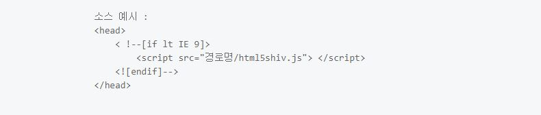
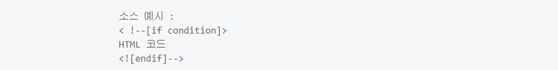

HTML
HTML(HyperText Markup Language)은 웹 문서를 표현하기 위한 하이퍼텍스트 마크업 언어입니다.
하이퍼텍스트란 문서에서 다른 문서로 이동하는 것을 말하며, 마크업이란 태그를 사용하여 콘텐츠의 의미를 부여하는 것을 말합니다.
HTML은 제목, 단락, 목록 등과 같은 본문을 위한 구조적 의미를 나타내는 것뿐만 아니라 링크, 인용과 그 밖의 항목으로 구조적 문서를 만들 수 있는 방법을 제공한다. 그리고 이미지와 객체를 내장하고 대화형 양식을 생성하는 데 사용될 수 있다. HTML은 웹 페이지 콘텐츠 안의 꺾쇠 괄호에 둘러싸인 "태그"로 되어있는 HTML 요소 형태로 작성한다. HTML은 웹 브라우저와 같은 HTML 처리 장치의 행동에 영향을 주는 자바스크립트와 본문과 그 밖의 항목의 외관과 배치를 정의하는 CSS 같은 스크립트를 포함하거나 불러올 수 있다. HTML과 CSS 표준의 공동 책임자인 W3C는 명확하고 표상적인 마크업을 위하여 CSS의 사용을 권장한다.
태그(tag)
태그는 HTML에서 정보를 전달하는 방식을 의미합니다.

- 열린 태그(Opening tag) : 이것은 요소의 이름과 열고 닫는 꺽쇠 괄호로 구성됩니다. 요소가 시작부터 효과가 적용되기 시작합니다.
- 닫는 태그(Closing tag) : 이것은 요소의 이름 앞에 슬래시(/)가 있는것을 제외하면 열린 태그와 같습니다. 이것은 요소의 끝에 위치합니다. 닫는 태그를 저거주지 않는 것은 흔한 초심자의 오류이며, 이것은 이상한 결과를 낳게됩니다
- 내용(Content) : 요소의 내용이며, 이 경우 단순한 텍스트입니다.
- 요소(Element) : 열린 태그, 닫는 태그, 내용을 통틀어 요소라고 합니다
속성(Attributes)
HTML 속성은 태그에 기본 기능 및 유형을 성정하고, 태그의 동작을 제어하기위한 용어입니다.

- 요소 이름 다음에 바로 오는 속성은 요소 이름과 속성 사이에 공백이 있어야 되고, 하나 이상의 속성들이 있는 경우엔 속성 사이에 공백이 있어야 합니다.
- 속성 이름 다음엔 등호(=)가 붙습니다.
- 속성 값은 열고 닫는 따옴표로 감싸야 합니다.
요소(Element)
요소는 HTML을 구성하는 가장 기본 단위입니다.
태그의 시작태그와 끝나는 태그 사이의 범위를 요소라고 합니다.
주석
주석 표시는 프로그램에 영향을 미치지 않으며, 설명이나 메모를 목적으로 사용합니다.
<!-- 주석표시 -->;
블록요소 / 인라인요소
블록요소는 박스, 인라인 요소는 텍스트를 의미합니다.
- 블록 엘리먼트(Block Element)
- 독립된 박스 영역으로 한 줄에 하나에 블록 요소만 표한 할 수 있습니다.
- 블록 요소에는 블 록 요소와 인라인 요소를 포함 할 수 있습니다.
- <div>, <,p>, <ul>, <li>, <hr>, <address>
- 인라인 엘리먼트(Inline Element)
- 독립된 텍스트 영역으로 한 줄에 여러개의 인라인 요소를 표현 할 수 있습니다.
- 인라인 요소에는 블록요소가 포함 될 수 없지만 인라인 요소는 포함 할 수 있습니다.
- <span>, <a>, <img>, <input>, <button>, <br>;
DTD 선언
웹 문서를 제작하기 위해서는 웹 문서 유형을 설정해야 합니다.
DTD(Document Tape Declaration)을 설정하지 않거나 잘못 설정하면 브라우저에 따라 화면이 다르게 나오거나 렌더링이 달라지기 때문에 독타입을 설정해야 합니다.
<!-- HTML 4.01 Strict -->
<!DOCTYPE HTML PUBLIC "-//W3C//DTD HTML 4.01//EN" "http://www.w3.org/TR/html4/strict.dtd">
<!-- HTML 4.01 Transitional -->
<!DOCTYPE HTML PUBLIC "-//W3C//DTD HTML 4.01 Transitional//EN" "http://www.w3.org/TR/html4/loose.dtd">
<!-- HTML 4.01 Frameset -->
<!DOCTYPE HTML PUBLIC "-//W3C//DTD HTML 4.01 Frameset//EN" "http://www.w3.org/TR/html4/frameset.dtd">
<!-- XHTML 1.0 Strict -->
<!DOCTYPE html PUBLIC "-//W3C//DTD XHTML 1.0 Strict//EN" "http://www.w3.org/TR/xhtml1/DTD/xhtml1-strict.dtd">
<!-- XHTML 1.0 Transitional -->
<!DOCTYPE html PUBLIC "-//W3C//DTD XHTML 1.0 Transitional//EN" "http://www.w3.org/TR/xhtml1/DTD/xhtml1-transitional.dtd">
<!-- XHTML 1.0 Frameset -->
<!DOCTYPE html PUBLIC "-//W3C//DTD XHTML 1.0 Frameset//EN" "http://www.w3.org/TR/xhtml1/DTD/xhtml1-frameset.dtd">
<!-- XHTML 1.1 -->
<!DOCTYPE html PUBLIC "-//W3C//DTD XHTML 1.1//EN" "http://www.w3.org/TR/xhtml11/DTD/xhtml11.dtd">
<!-- html5 -->
<!DOCTYPE html>
언어 속성 설정
콘텐츠의 언어를 인식하고 언어 정보를 추출하는데 사용합니다.
미리 언어를 설정하면 효율성이 더 좋아집니다.
<!-- HTML5 -->
<html lang="ko">
<!-- HTML4 -->
<html xmlns="http://www.w3.org/1999/xhtml" xml:lang="en">
문서 구조
HTML 구조는 html 요소 안에 head와
body로 이루어져 있습니다.
- HTML 구조는 독타입 선언을 해주어야 하나의 웹 문서가 완성됩니다.
- HTML 문서는 상하 관계가 존재하는 계층적인 구조로 되어있습니다. 상위에 있는 요소와 하위에 있는 요소는 부모 자식 관계로 표현하며, 이러한 구조를 DOM 구조라고 합니다.
- HEAD 요소에는 제목,사이트 정보, 스크립트,스타일시트, 메타 정보들을 제공합니다.
- BODY 요소에는 문서 본문에 해당하는 콘텐츠 영역입니다.
<!DOCTYPE html>
<html lang="ko">
<head>
</head>
<body>
</body>
</html>
웹 표준과 웹 접근성
웹 표준과 웹 접근성
- www(world wide web) 구현을 위해 따라야 할 표준 규격을 일컫는데, 쉽게 말해 웹 표준이란 동일한 환경에서 동일한 모습을 보여주는 것을 의미한다.이는 OS(운영체제)와 브라우저의 따른 렌더링 된 부분에서 다르지 않게 하기 위한 것이라 할 수 있다.
- 서버 기술의 표준화 단체인 W3C(world wide consortium)가 권고한 표준안에 따라 웹사이트를 작성할 대 이용하는 HTML, CSS, JavaScript 등에 대한 규정을 담고 있으며, 웹 표준의 궁극적인 목적은 웹사이트에 접속한 사용자가 어떠한 운영체제나 브라우저를 사용하더라도 동일한 결과를 보이게 하는 것 이다.
웹 표준(Web standard)
웹 표준을 왜 지켜야 할까?
- 웹 접근성의 향상
- 크로스 브라우징 친화적인 웹사이트 구현
- 파일사이즈 축소, 서버공간 절약 및 비용절감 효과
- 하위호환성과 상위호환성 확보
- 웹사이트에서 제공하는 정보를 차별 및 제한없이 동등하게 이용할 수 있도록 보장하는 것을 말한다. 더욱 쉽게말해 장애인들도 웹을 사용할 수 있도록 하는 것이다.
- 웹에 접근하는데 영향을 미치는 요인은 언어장애와 신체적 장애뿐 아니라, 고사양 하드웨어, 고비용 소프트웨어를 사용하지 못하는 사회경제전 여건까지 포함한다.
- 경제적 여건이 어려워 낡은,저사양 컴퓨터를 이용하는 사람들도 큰 불편없이 정보를 접하게 하는 것도 웹 접근성의 문제이다. 그리고 마우스를 민첩하게 다루기 어려운 어르신들께서도 이용에 불편이 없도록 하는 것이 접근성의 문제이다.
웹 접근성
웹 접근성 지침 사항
- 장애인,고령자 들을 포함한 사용자층 확대
- 규정과 법적 요구사항에 대한 준수
- 다양한 환경, 새로운 기기에서의 이용
- 사회공헌 및 복지기업으로서의 기업이미지 향상
html5 shiv
HTML5의 요소를 HTML5를 지원하지 않는 IE 9 이하 하위 버전 등에서 사용할 수 있도록 해 주는 Javascript 라이브러리입니다.
HTML5에 새롭게 추가된 태그
구조를 기술하기위해 추가된 태그
<section>: 문서의 섹션을 의미하며 h1, h2, h3, h4, h5, h6 요소와 함께 문서의 구조를 기술하기 위해서 사용한다.<article>: 블로그 글이나 신문 기사와 같이 독립적인 문서를 의미한다.<aside>: 본문페이지와 연관이 작은 추가적인 콘텐츠를 의미한다.<hgroup>: 섹션의 헤더를 의미한다.<header>: 소개나 네비게이션 영역을 나타낸다.<footer>: 섹션의 푸터를 의미하며 저자나 저작권등의 정보를 표시한다.<nav>: 네비게이션을 위한 섹션을 의미한다.<figure>: 본문에서 참조할 수 있는 독립적인 사진과 같은 콘텐츠를 의미한다.<figcaption>: figure 요소의 캡션을 제공할 때 사용한다. 선택사항이다.
새로운 용도로 추가 태그
<video>,<audio>: 멀티미디어 콘텐츠를 사용하기위한 요소이고 API를 제공하여 콘텐츠를 제어할 수 있도록 하고 있다.<track>: video 요소의 텍스트 트랙을 나타낸다.<bdi>: 좌에서 우, 우에서 좌로 기술되는 언어를 표기할 때 사용한다.<wbr>: 개행을 할 수 있다는 표시를 할 때 사용한다.<canvas>: 비트맵 그래픽을 표현하기 위해서 사용한다.<command>: 사용자 수행 명령을 기술한다.<details>: 사용자의 인터랙션에 의해서 보여지는 추가적인 정보를 나타낸다.<summary>: detail 요소의 요약을 제공할 때 사용한다.<datalist>: input 요소의 list 속성으로 연결해서 콤보박스를 표현한다.<mark>: 참조를 위한 표시를 하기 위해 사용한다.<progress>: 진행상황을 표기하기 위해 사용한다.<meter>: 측정값을 표시하기 위해 사용한다.<time>: 날짜나 시간을 표시하기 위해 사용한다.<embed>: 플러그인 콘텐츠를 표현한다.<source>: video, audio 요소에서 사용할 미디어 파일을 기술한다.<data>: 기계가 읽어들이는 데이터를 표시한다(WHATWG HTML).<ruby>,<rt>,<rp>: 루비 표현을 위해 사용한다.<keygen>: 생성된 키 쌍을 나타낸다.<output>: 출력내용을 표현한다.
HTML5에 없어진 태그
<acronym>태그는 생략된 글자나 약어를 표시하는데 사용합니다.<applet>태그는 웹 페이지에 자바 애플릿을 삽입하는 데 사용합니다.<basefont>태그는 문서의 기본 폰트, 사이즈, 종류를 설정합니다.<big>태그는텍스트를 한단계 크게 만듭니다.<cente>태그는 가운데 정렬에 사용합니다.<dir>태그는 HTML 리스트(list)를 정의할 때 사용합니다.<font>태그는 텍스트의 폰트(font), 색상 그리고 크기를 정의할 때 사용합니다.<frame>태그는frameset요소에 포함되는 하나의 프레임(frame)을 정의할 때 사용합니다.<frameset>태그는 프레임을 어떻게 나눌것인가를 지정합니다.<noframes>태그는 특정 웹브라우저에서는 프레임 태그를 읽지 못하는 경우가있기 때문에 이를 대비해서 프레임으로 이루어진 문서라는 것을 안내해줘야 할 때 사용합니다.<strike>태그는 텍스트에 취소선을 만들 때 사용합니다.<tt>태그는 타자모양의 텍스트를 정의합니다.
시멘틱 태그
- 특정한 태그에 의미를 부여한 태그를 말합니다.
- 검색엔진은 이 태그를 이용하여 어떤 태그가 어떠한 기능을 하는지 데이터를 효율적으로 추출할 수 있습니다.
<section>
section 태그는 일반적으로 문서의 콘텐츠 영역을 설정할 때 사용합니다.
- 콘텐츠와 관련된 한 가지 주제 영역을 의미합니다.
section요소는 문장이나 스타일링 요소가 아니기 때문에 편의나 영역을 위함이라면div 태그가 좋습니다.section요소는 제목이 없는 경우 섹션이라고 할 수 없기 때문에 제목을 제공해야 합니다.section요소는 일반적인 영역에 주제가 아니라 구체적인 요소(article, aside, nav)를 대신 사용하는 것이 더 적절합니다.
<nav>
nav 태그는 웹 페이지 내에서 이동 할 수 있는 네비게이션 링크 그룹을 설정합니다.
- 콘텐츠와 관련된 한 가지 주제 영역을 의미합니다.
nav는 문서의 핵심적인 페이지 메뉴 및 서브 메뉴에서 사용합니다.nav요소는 문서에서 주로 한 번만 사용합니다.- 문서 안에 링크가 포함된 콘텐츠는
nav를 사용하지 않습니다. nav는 핵심적인 네비게이션에 사용해야 하므로 푸터 내에 링크 그룹의 사용은 적절하지 않습니다.
<main>
main 태그는 웹 문서에서 주요 콘텐츠 영역을 나타낼 때 사용합니다.
main태그는 웹 페이지에서 한번만 사용할 수 있으며, 접근성과 검색 영역 노출을 향상시킵니다.article,aside,footer,nav의 하위 요소로 사용할 수 없습니다.
<aside>
aside 태그는 메인 콘텐츠와 관련된 사이트 콘텐츠 영역을 설정합니다.
aside는 메인 콘텐츠와 관련된 사이드의 정보, 광고 등 부분적인 정보를 그룹화할 때 사용합니다.
<header>
header 태그는 웹 문서의 헤더 영역을 설정합니다.
header는 웹 페이지의 소개, 네비게이션 영역, 검색영역, 로고영역을 포함하는 영역입니다.header태그에는 제목 태그가 포함 될 수 있으며, 필수 조건은 아닙니다.header는 섹션 콘텐츠가 아닌 그룹화하기 위한 요소이므로section요소를 포함 할 수 없습니다.
<footer>
footer 태그는 웹 문서의 푸터 영역을 설정합니다.
footer태그는 저작권 정보, 회사 정보, 관련 링크, 바닥글, 주소 사이트 정보 등을 포함한느 콘텐츠 영역입니다.footer태그는 섹션 콘텐츠가 아닌 그룹을 나타내는 요소이며,section,article,aside태그를 포함 할 수 있습니다.
<article>
article 태그는 웹 문서의 독립적인 항목을 나타내는 콘텐츠를 의미합니다.
article태그는 신문기사, 잡지, 블로그 항목, 게시판 글 등의 독립적인 항목을 나타냅니다.section태그는 하나의 주제를 나타낸다면,article태그는 주제를 묶은 독립적인 콘텐츠입니다.section요소 안에는article요소를 쓸 수 있으며,article요소 안에도section요소를 쓸 수 있습니다.
<div>
div태그는 문서의 섹션을 만들거나 영역을 만들 때 사용합니다.
<p>
p 태그는 문단을 쓸 때 사용합니다.
- p태그와 p태그 사이에는 한 줄의 행간이 표현됩니다
<ul>
ul 태그는 순서가 없는 목록을 쓸 때 사용합니다.
- ul태그는 li태그와 같이 사용합니다.
- 블릿기호는 점으로 표현됩니다.
<li>
li 태그는 목록의 항목을 쓸 대 사용합니다.
- li태그는 ul태그, ol태그, munu 태그와 같이 사용합니다.
- li태그 안에는 다른 목록을 중첩으로 사용할 수 있습니다.
<ol>
ol 태그는 순서가 있는 목록을 쓸 때 사용합니다.
- ol태그는 li태그와 같이 사용합니다.
- 블릿기호는 번호(숫자)로 표현됩니다.
<a>
a태그는 하이퍼 링크를 설정합니다.
- 하이퍼 링크란 현재 페이지에서 다른 페이지 이동을 말합니다.
- 방문하지 않은 링크는 밑줄과 파란색으로 표현됩니다.
- 방문한 링크는 밑줄과 보라색으로 표현됩니다.
- 활성화된 링크는 밑줄과 빨간색으로 표현됩니다.
- HTML5에서는 예외적으로 인라인 구조인 a 태그에 블록 요소에 포함할 수 있습니다.
<title>
title 태그는 문서의 제목을 넣어주는 태그 입니다.
말 그대로 문서의 제목을 나타내 줍니다. 본문에는 나타나지 않습니다
대신, 브라우저 툴바 상단이나, 검색할 때 이 TITEL이 제목으로 나옵니다,
제목은 하나 이상 쓸 수 없으며 타이틀은 head영역에만 들어갈 수 있다.
<meta>
meat 태그는 웹 문서에 대한 여러가지 정보를 제공합니다.
| 메타데이터 | 설명 |
|---|---|
| charset | 웹 페이지 언어를 설정합니다. |
| author | 웹 페이지를 만든 사람을 설정합니다. |
| description | 웹 페이지에 대한 설명을 설정합니다. |
| keywords | 웹 페이지에 대한 키워드를 설정합니다. |
| application-name | 웹 페이지에 관련된 응용프로그램 이름을 설정합니다. |
| generator | 웹 페이지에서 만든 소프트웨어의 이름을 설정합니다. |
<!-- HTML5 언어 설정 -->
<meta charset="UTF-8">
<!-- HTML4 언어 설정 -->
<meta http-equiv="Content-Type" content="text/html;charset=UTF-8">
<!-- 웹 문서에 대한 제작자 설정 -->
<meta name="author" content="webstoryboy">
<!-- 웹 문서에 대한 설명 -->
<meta name="description" content="이 사이트는 무슨무슨 사이트입니다.">
<!-- 웹 문서에 대한 키워드 설정 -->
<meta name="keyword" content="키워드, 키워드, 키워드">
<!-- 웹 문서에 대한 웹 응용 프로그램 이름 -->
<meta name="application-name" content="응용 프로그램 이름">
<!-- 웹 문서에 대한 소프트웨어 이름 -->
<meta name="generator" content="소프트웨어 이름">
<table>
태그는 HTML 문서에서 표를 만드는 태그입니다.행과 열을 표현하기 위해 <tr>, <td>등의 태그와 함께 작성하게 됩니다.
| 태그 | 설명 |
|---|---|
| <tr> | table row 약자로 표의 제목을 쓰는 역할 |
| <td> | table data 약자로, 가로줄을 만드는 역할 |
| <tbody> | table body약자로, 셀을 만드는 역할 : 테이블 내용 |
| <thead> | 테이블 제목 |
| <tfoot> | 끝에 오는 내용 |
| <caption> | 요소는 표의 설명 또는 제목을 나타냅니다. |
| <col> | 표의 열을 나타내며, 열에 속하는 칸에 공통된 의미를 부여할 때 사용합니다. |
| <colgroup> | 요소는 표의 열을 묶는 그룹을 정의합니다. |
| <colspan> | 가로로 표의 열을 묶는 태그 |
| <rowspan> | 세로로 표의 열을 묶는 태그 |
<tr>
tr 태그는 테이블에서 셀들로 이루어진 하나의 행(row)을 정의할 때 사용합니다.
<tr> 요소는 하나 이상의 <th> 요소(data cell)나 <td> 요소(header cell)를 포함할 수 있습니다.
<td>
td 태그는 HTML 테이블에서 하나의 데이터 셀(data cell)을 정의할 때 사용합니다.
HTML 테이블를 구성하는 셀(cell)은 두 종류로 구분할 수 있으며, 하나는 <th> 요소를 사용한 헤더 정보를 저장하는 헤더 셀과 또 다른 하나는 <td> 요소를 사용한 일반적인 데이터를 저장하는 데이터 셀입니다.
<th> 요소 내의 텍스트는 기본적으로 굵은 폰트로 중앙 정렬되며, <td> 요소 내의 텍스트는 일반적인 두께의 폰트로 좌측 정렬됩니다.
<tbody>
tbody태그는 HTML 테이블에서 내용 콘텐츠들을 하나의 그룹으로 묶을 때 사용합니다.
tbody요소는 테이블의 각 영역(header,body,footer)을 명시하기 위해
thead,tfoot요소와 함께 사용됩니다.
<thead>
thead태그는 요소는 테이블의 각 영역(header, body, footer)을 명시하기 위해 <tbody>, <tfoot> 요소와 함께 사용됩니다.
브라우저는 이러한 요소들을 사용하여 테이블의 헤더나 푸터와는 독립적으로 테이블의 내용만 스크롤되게 할 수 있으며, 여러 페이지에 걸쳐 있는 큰 테이블을 인쇄할 때 각 페이지의 상단과 하단에 테이블의 헤더와 푸터가 모두 인쇄되도록 할 수도 있습니다.
<thead> 요소는 <table> 요소의 자식 요소로써, 반드시 모든 <caption>, <colgroup> 요소 다음에 위치해야 합니다. 또한, <thead> 요소는 반드시 하나 이상의 <tr> 요소를 포함하고 있어야 합니다.
<thead>와 <tbody>, <tfoot> 요소는 기본적으로 웹 페이지의 레이아웃에 전혀 영향을 주지 않지만, 이 요소들의 스타일을 CSS를 사용하여 변경할 수는 있습니다.
<tfoot>
tfoot 태그는 HTML 테이블에서 foter 태그의 콘텐츠(footer content)들을 하나의 그룹으로 묶을 때 사용합니다.
<caption>
caption 태그는 표(table)에 캡션 붙일 때 caption 태그를 사용합니다.
- 기본 위치는 표 위 가운데입니다.
- 캡션 위치는 CSS의 caption-side로 정합니다.
<col>
title 태그는 문서의 제목을 넣어주는 태그 입니다.
col 태그는 <colgroup> 요소에 속하는 각 열(column)의 속성을 정의할 때 사용합니다.
<colgroup>
colgroup 태그는 col 태그를 그룹화하는 역할을 합니다.
colgroup 태그는 테이블에서 서식 지정을 위해 하나 이상의 열을 그룹으로 묶을 때 사용합니다.
<h1~h6>
h 태그는 제목 태그입니다.
- size : 태그의 굵기를 설정한다.
- width : 태그의 가로 길이를 설정한다
- align : 태그의 정렬값을 설정한다. left, center, right
- color : 태그의 색상을 설정한다.
- noshade : 입체감을 없애고 평평한? 상태로 보여준다.
<br>
br태그는 줄을 바꿔줄 때 사용합니다.
- HTML은 연속한 여러 개의 빈 칸 또는 줄바꿈을 하나의 빈 칸으로 인식합니다. 따라서 코드 상에서 줄바꿈을 하거나 여러 번 띄어쓰기를 해도 한 번 띄어쓰기로 표현됩니다. 만약 블록 요소에서 줄바꿈을 하고 싶다면 br 태그를 이용합니다.
<hr>
hr태그는 문서의 주제를 분리할 때 사용합니다.
- size : 태그의 굵기를 설정한다.
- width : 태그의 가로 길이를 설정한다
- align : 태그의 정렬값을 설정한다. left, center, right
- color : 태그의 색상을 설정한다.
- noshade : 입체감을 없애고 평평한? 상태로 보여준다.
<strong>
strong태그는 중요한 의미를 갖는 텍스트를 정의합니다.
<em>
em 태그는 텍스트를 강조하는데 사용합니다.
<dt>
dt태그는 설명 목록의 용어 및 이름을 정의합니다.
<dd>
dd태그는 설명 목록 요소의 설명을 정의합니다.
<dl>
dl태그는 설명 목록을 정의합니다.
<span>
span태그는 인라인 요소 그룹화를 정의합니다.
<address>
HTML 문서에서 주소를 입력하는 방법입니다. 그냥 <p>태그를 사용해서 작성하셔도 되지만, 굳이 address 태그를 사용하는 이유는 검색엔진 때문.
<form>
정보를 제출하기 위한 대화형 컨트롤을 포함하는 문서 구획을 나타냅니다.
| 속성 | 설명 |
|---|---|
| accept-charset | 폼 데이터(form data)를 서버로 보낼 때 사용되는 문자 인코딩(character encoding) 방식을 명시합니다. |
| action | 폼 데이터(form data)를 서버로 보낼 때 해당 데이터가 도착할 URL을 명시합니다. |
| autocapitalize | 양식 요소 내에서 영문을 입력할 때 자동으로 대문자 변환하는 방식. |
| autocomplete | 요소에서 자동 완성 기능을 사용할지 여부를 명시합니다. |
| enctype | 폼 데이터(form data)가 서버로 제출될 때 해당 데이터가 인코딩되는 방법을 명시합니다. |
| method | 폼 데이터(form data)가 서버로 제출될 때 사용되는 HTTP 메소드를 명시합니다. |
| name | 해당 버튼의 이름(name)을 명시합니다. |
| novalidate | 지정한 경우 양식의 유효성 검증을 건너뜁니다. novalidate 특성을 지정하지 않은(양식의 검증을 수행하는)
경우에<button>, <input type="submit">,
<input type="image"> 요소의 formnovalidate 특성으로 재정의할 수 있습니다. |
| target | 양식 제출의 결과를 표시할 위치를 나타내는 표준 키워드 혹은 사용자 지정 이름 |
<fieldset>
웹 양식의 여러 컨트롤과 레이블 <label> 을 묶을 때 사용합니다.
disabled: 지정한 경우, 모든 자손 컨트롤을 비활성화합니다. 비활성 컨트롤은 편집할 수 없고,form을 제출할 때 데이터에 포함되지 않습니다. 마우스 클릭, 포커스 등 브라우저 이벤트도 모두 받지 않습니다. 브라우저는 비활성 컨트롤을 주로 회색으로 표시합니다. 단,legend안의 양식 요소는 비활성 상태로 전환되지 않습니다.form:fieldset요소와 연결할form요소("양식 소유자")의 id.fieldset이 해당form안에 위치하지 않아도 연결할 수 있습니다.
<legend>
부모 <fieldset> 콘텐츠의 설명을 나타냅니다
<input>
사용자에게 입력을 받을 수 있는 필드를 생성하는 것 따로 마감 </input> 태그가 없음입력 유형과 특성의 다양한 조합 가능성으로 인해, <input> 요소는 HTML에서 제일 강력하고 복잡한 요소 중 하나입니다.
| 속성 | 설명 |
|---|---|
| text | 기본 텍스트를 입력하는 창 |
| password | 비밀번호를 입력하는 창 생성 |
| button | 기본 버튼 생성 |
| raido | 라디오버튼 생성 |
| checkbox | 체크박스 생성 |
| file | 파일 선택하는 버튼 생성 |
| image | 이미지를 버튼처럼 사용 |
| hidden | 사용자에게 입력받지 않고 기본으로 설정 된 값을 서버로 전송 |
| submit | 서버로 제출하는 버튼 생성 |
| reset | form 에서 입력한 input 값들을 reset 시킴 |
| color | 색을 지정할 수 있는 컨트롤. 브라우저가 지원하는 경우, 활성화 시 색상 선택기를 열어줍니다 |
| date | 날짜를 선택할 수 있는 입력 필드를 정의합니다. |
| datetime-local | 날짜와 시간을 선택할 수 있는 입력 필드를 정의합니다. |
| 이메일 주소를 입력할 수 있는 입력 필드를 정의합니다. | |
| month | 날짜를 선택할 수 있는 입력 필드를 정의합니다. |
| number | 숫자를 입력할 수 있는 입력 필드를 정의합니다. |
| range | 슬라이드 바를 조정하여 범위 내의 숫자를 선택할 수 있는 입력 필드를 정의합니다. |
| search | 검색어를 입력할 수 있는 텍스트 필드를 정의합니다. |
| tel | 전화번호를 입력할 수 있는 입력 필드를 정의합니다. |
| time | 간을 선택할 수 있는 입력 필드를 정의합니다. |
| url | URL 주소를 입력할 수 있는 입력 필드를 정의합니다. |
| week | 날짜를 선택할 수 있는 입력 필드를 정의합니다. |
<label>
사용자 인터페이스 항목의 설명을 나타냄
<button>
클릭 가능한 버튼을 나타냅니다. 버튼은 양식 내부는 물론 간단한 표준 버튼 기능이 필요한 곳이라면 문서 어디에나 배치할 수 있습니다. 기본값의 HTML 버튼은 사용자 에이전트의 호스트 플랫폼과 비슷한 디자인을 따라가지만, 외형은 CSS로 변경할 수 있습니다.
| 속성 | 설명 |
|---|---|
| autofocus | 페이지가 로드될 때 자동으로 포커스가 버튼으로 이동됨을 명시합니다. |
| disabled | 해당 버튼이 비활성화됨을 명시합니다. |
| form | 해당 버튼이 포함되는 하나 또는 그 이상의 <form> 요소를 명시합니다. |
| formaction | 폼 데이터(form data)가 서버로 제출될 때 해당 데이터가 도착할 URL을 명시합니다. |
| formenctype | 속성은 폼 데이터(form data)가 서버로 제출될 때 해당 데이터가 인코딩(encoding)되는 방식을 명시합니다. |
| formmethod | 서버로 제출될 때 사용할 HTTP 메소드를 명시합니다. |
| formnovalidate | 폼 데이터(form data)를 서버로 제출할 때 해당 데이터의 유효성을 검사하지 않음을 명시합니다. |
| formtarget | 폼 데이터(form data)가 서버로 제출된 후 받은 응답(response) 데이터를 어디에 표시할 지를 명시합니다. |
| name | 해당 버튼의 이름(name)을 명시합니다. |
| type | 해당 버튼의 타입(type)을 명시합니다. |
| value | 해당 버튼의 초깃값(initial value)를 명시합니다. |
조건식 주석
IE10 미만에서만 작동하는 조건문으로, 이를 이용하여 IE 브라우저별로 어떤 기능이나 파일, 디자인등을 삽입하는 용도로 자주 사용합니다.
<i>
i 태그는 음성이나 감정 등의 텍스트를 정의합니다.
- 기술적인 구문이나, 외국어, 사상, 생각, 선박이름, 주변 콘텐츠와 다른 방식으로 표시하는 텍스트를 강조할 때도 사용합니다.
- 글씨를 굵게 표현할 때 쓰는 <b> 태그, 글씨를 강조할 때 쓰는 <em> 태그, 글씨의 중요성을 강조할 때 쓰는 <strong> 태그, 참고용으로 표시할 때 쓰는 <mark> 태그에 해당되지 않을 때 고려해서 사용합니다.
- HTML4에서 <i> 태그는 이탤릭체로 표현하기 위해 사용하였지만, HTML5에서 <i> 태그는 기술적인 구문, 언어 및 사상, 선박이름에 정의하는데 사용합니다.
<figure>
- figure태그는 일러스트레이션, 다이어그램, 사진, 코드 목록 등과 같은 자체 포함 된 콘텐츠를 지정
- figure 태그는 HTML5에서 새로 추가됨
- ie 9.0 이상 지원
- https://developer.mozilla.org/ko/docs/Web/HTML/Element/figure
<figcaption>
IE10 미만에서만 작동하는 조건문으로, 이를 이용하여 IE 브라우저별로 어떤 기능이나 파일, 디자인등을 삽입하는 용도로 자주 사용합니다.
- figure요소 안에 컨텐츠에 대한 설명을 입력
- figure 태그의 자식 태그
- ie 9.0 이상 지원
- https://developer.mozilla.org/ko/docs/Web/HTML/Element/figcaption
<video>
video웹페이지에 영상파일을 재생할 때 사용합니다.
예전에는 웹페이지에 동영상을 재생하기 위해 외부 프로그램을 설치하는등 복잡한 과정이 필요했으나 지금은 video태그로 간단하게 이를 구현할 수 있습니다.
src : 비디오 파일의 주소
controls : 컨트롤러 표시
autoplay : 자동 재생
loop : 반복 재생
width : 영상의 가로길이
height : 영상의 세로길이
muted : 음소거